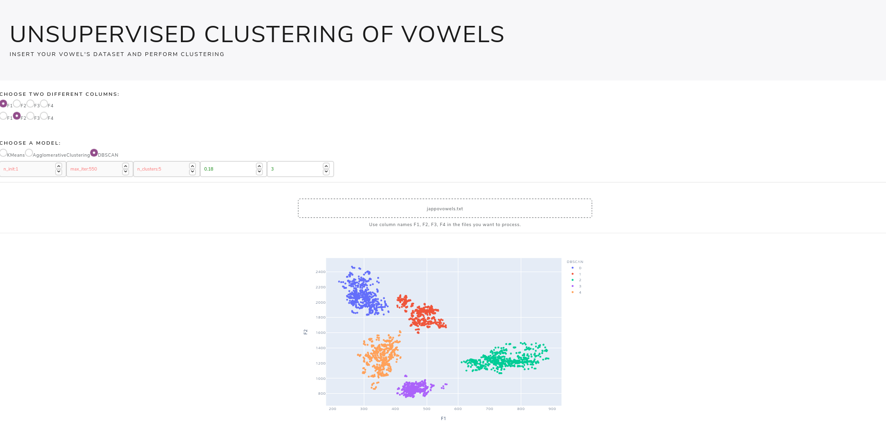

Creare Una Piccola Webapp Per Clustering Delle Vocali
Table of Contents
Essenziali per una webapp minimalista
Questo primo articolo tratterà principalmente come gestire la creazione di modelli, i file tabulati caricati e impostare una semplice dashboard.
In questi articoli utilizzerò:
- il package Dash di python per poter creare la dashboard interattiva,
- plotly per creare i grafici,
- Docker per creare un container che sarà poi hostato serverless da un cloud provider,
- gcloud command line tool per poter deployare il mio container su cloud run.
Cosa farà questa webapp
Questa webapp permetterà di caricare file tabulari, come csv, xls, ecc… contenenti le formanti delle vocali (F1, F2, F3 ed F4), ed effettuare clustering unsupervised delle vocali scegliendo tra vari modelli disponibili e impostando i parametri come si desidera. Il risultato finale sarà questo:

L'intero codice usato per la webapp si può trovare qui: https://github.com/andcarnivorous/vowel-cluster-dashapp
Mentre un'istanza della webapp è disponibile qui: https://vowel-cluster-j7bugp5hfa-ew.a.run.app
Classe per gestire i dati e applicare clustering
Per prima cosa creiamo una classe chiamata Modeller, questa classe creerà un modello usando il tipo di modello scelto e i dati forniti.
I modelli scelti per questa webapp saranno KMeans, Agglomerative Clustering e DBSCAN.
Creiamo la nostra classe, creando mappe dei modelli e dei loro parametri, così da poter gestire la selezione del modello da parte dell'utente e poter anche assicurarci che i parametri ricevuti siano sempre corretti e pertinenti al giusto modello.
import pandas as pd import numpy as np import plotly.express as px from sklearn.preprocessing import StandardScaler from sklearn.cluster import KMeans from sklearn.cluster import AgglomerativeClustering, DBSCAN from time import time class Modeller: models = {"KMeans": KMeans, "AgglomerativeClustering": AgglomerativeClustering, "DBSCAN": DBSCAN} params_map = {"KMeans": {"n_clusters": None, "n_init": None, "max_iter": None}, "AgglomerativeClustering": {"n_clusters": None}, "DBSCAN": {"eps": None, "min_samples": None}} def __init__(self, dataframe, model_type, **params): self.dataframe = dataframe self.model_type = model_type self.params = {k: v for k, v in params.items() if k in self.params_map[model_type]}
I **params ricevuti all'instanzazione del modello saranno praticamente i parametri, e con quelli presenti nell'attributo della classe ci assicureremo di non includere altri parametri non pertinenti che potrebbero causare errori.
Adesso creiamo un metodo per scegliere dal dataframe ricevuto solo le due colonne selezionate (potremmo fare clustering in più di due dimensioni, ma poi diventa difficile da plottare e più costoso da computare). Creeremo anche un metodo che applicherà lo z-score alle formanti, così da normalizzare i nostri dati.
def subset_dataframe(self, columns): if all(col in self.dataframe.columns for col in columns): try: X = self.dataframe.loc[:, columns] except KeyError: raise KeyError(f"Columns {columns} not present") return X if all(col.lower() in self.dataframe.columns for col in columns): try: columns = [col.lower() for col in columns] X = self.dataframe.loc[:, columns] except KeyError: raise KeyError(f"Columns {columns} not present") return X else: raise KeyError(f"Columns {columns} are not present in dataframe") @staticmethod def standardize(X): X_standardized = StandardScaler().fit_transform(X) return X_standardized
Finalmente, creiamo una metodo che prenderà le colonne richieste, applicherà il metodo di normalizzazione, creerà l'instanza del modello sklearn e fara fitting dei dati, restituendo le labels dei gruppi trovati.
def set_up_model(self, columns): if any(param is None for k, param in self.params.items()): return None X = self.subset_dataframe(columns) X_standardized = self.standardize(X) model = self.models[self.model_type] t0 = time() model = model(**self.params).fit(X_standardized) timing = time() - t0 model.execution_time = timing self.dataframe[self.model_type] = model.labels_ self.dataframe[self.model_type] = self.dataframe[self.model_type].astype("category") fig = px.scatter(self.dataframe, x=columns[0], y=columns[1], color=self.model_type) return fig
Per comodità, farò sì che il metodo set_up_model abbia come return il grafico già generato, ma sarebbe meglio usare una funzione in utils per questa azione o creare una classe che si prenda cura della generazione dei grafici.
La Dashboard
Devo ammettere che il codice che si usa per creare dashboard con dash lo trovo abbastanza brutto, tra indentazione e parentesi sembra di star programmando qualcosa che può confondere ancor più di Lisp, ma permette in generale di creare velocemente dashboard semplici e, grazie al supporto di plotly, è facile creare grafici e mostrarli direttamente e renderli anche interattivi.
Creiamo un'instanza della dashboard ed usiamo app.server che servirà per quando hosteremo l'app.
import base64 import io import pandas as pd import dash import dash_bootstrap_components as dbc import dash_core_components as dcc import dash_html_components as html from dash.dependencies import Input, Output, State from modeller import Modeller from configs import models, params, all_params, limits, columns app = dash.Dash(__name__, external_stylesheets=[dbc.themes.LUX]) server = app.server
Per il layout, potete far riferimento alla repo, non ha molto senso andarci passo per passo attraverso [GITHUB LINK HEREEE]
Ciò che ci interessa sono i callback, che vengono utilizzati da dash per rendere i grafici interattivi.
Prima di tutto abbiamo bisogno di un callback per fare parsing dei file che saranno caricati:
@app.callback(Output('output-data-upload', 'children'), [Input('upload-data', 'contents'), Input("model-type", "value")] + inputs + [State('upload-data', 'filename'), State('upload-data', 'last_modified')]) def update_output(list_of_contents, model_type, n_init, max_iter, n_clusters, eps, min_samples, column1, column2, list_of_names, list_of_dates): if list_of_contents is not None: if column1 == column2: return html.P("Select different columns!") contents = list_of_contents[0] content_type, content_string = contents.split(',') decoded = base64.b64decode(content_string) try: if 'csv' in content_type: # Assume that the user uploaded a CSV file df = pd.read_csv( io.StringIO(decoded.decode('utf-8'))) elif 'xls' in content_type or list_of_names and list_of_names[0].endswith("xls"): # Assume that the user uploaded an excel file df = pd.read_excel(io.BytesIO(decoded)) elif 'xlsx' in content_type or list_of_names and list_of_names[0].endswith("xlsx"): # Assume that the user uploaded an excel file df = pd.read_excel(io.BytesIO(decoded), engine="openpyxl") elif "text" in content_type: df = pd.read_fwf( io.StringIO(decoded.decode('utf-8'))) except Exception as e: print(e) return html.Div([ 'There was an error processing this file.' ]) if len(df.columns) > 8: return html.P("Dataframe has too many columns!") model = Modeller(df, model_type, **dict(n_init=n_init, max_iter=max_iter, n_clusters=n_clusters, eps=eps, min_samples=min_samples)) try: labels = model.set_up_model([column1, column2]) except Exception as e: return html.P(str(e)) if not labels: return html.P("Please, fill in all the parameters in green.") return dcc.Graph(id="chart", figure=labels, style={'display': 'block', 'height': 600, 'width': 900, 'margin-left': 'auto', 'margin-right': 'auto'}) return html.P("")
Abbiamo poi bisogno di un callback per gestire i parametri, vogliamo rendere accessibili solo quelli relativi al modello scelto, e un semplice callback per uploadare i file:
@app.callback(Output('output-params', 'children'), Input('model-type', 'value')) def update_params(model_type): if model_type: parameters = all_params htmlparams = html.Div( [ dcc.Input( id=f"input_{k}", type="number", placeholder=f"{k}:{v}", max=limits[k], readOnly=True if k not in params[model_type] else False, style={ "color": "red" if k not in params[model_type] else "green"} ) for k, v in parameters.items() ] ) return htmlparams @app.callback(Output('upload-data', 'children'), [Input('upload-data', 'contents')] + [State('upload-data', 'filename'), State('upload-data', 'last_modified')]) def upload_box(list_of_contents, list_of_names, list_of_dates): if list_of_contents is not None: contents = list_of_contents[0] content_type, content_string = contents.split(',') return html.P(f"{list_of_names[0]}") else: return html.Div(['Drag and Drop or ', html.A('Select Files')])
Con queste tre callback e la classe Modeller abbiamo praticamente la nostra webapp pronta.
Per provarla, basta aggiungere
if __name__ == '__main__': app.run_server(debug=False, host="0.0.0.0", port="8080")
alla fine del file ed eseguire il file usando il comando python3 main.py.